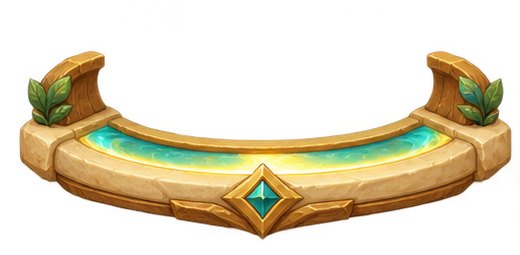
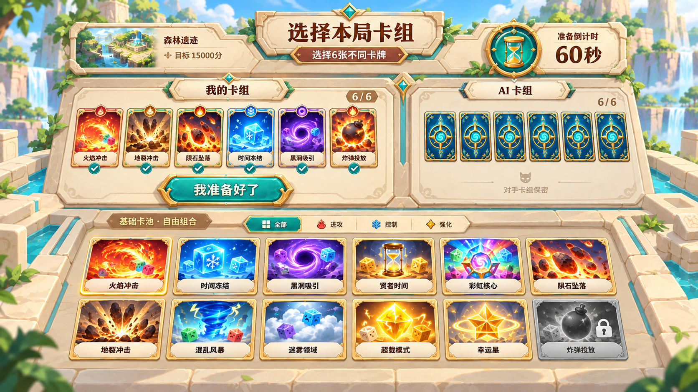
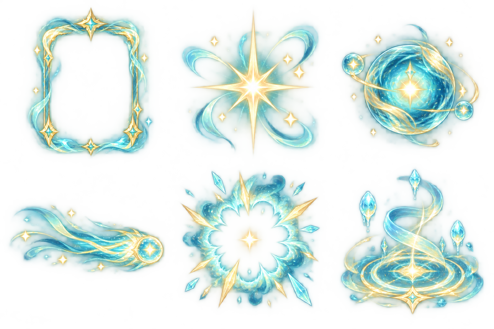

BLOCK BRAWL / ART PREPRODUCTION 01
浅砂岩 · 魔法构筑台
明亮轻竞技 × 精致2D幻想 | 卡框、主图与文字独立分层
进攻 / 珊瑚红 / 火纹控制 / 冰蓝 / 环形符文强化 / 蜜金与翡翠 / 星冠

手牌 → 激活 → 光团 → 命中
暖砂岩与木质结构承接棋盘；青金光带连接手牌、下一张与能量。
颜色 + 顶部徽记区分类别；亮边 / 勾选 / 锁定区分状态。
环境保持低对比，主图与可操作卡牌承担视觉重点。
下载风格总览 PNG · 总览使用本轮真实绘制素材组合。

完整界面方案
选卡 A：木质构筑桌，装饰较丰富。B：更浅的砂岩、减少枝叶与金饰，建议优先评审 B。左右卡组 + 下方卡池结构保留。

概念图用于布局、材质与氛围评审；小字及示例状态不作为规则数据。
战斗方案保留双棋盘与中央比分的基本结构。底部用统一托台连接预告、能量和六张扇形手牌；浮起、选中、禁用与拖拽姿态同时展示。示意图上层环境有绘画变化，正式接入时沿用原棋盘及地图。
六张统一成品卡
绘画主图 + 透明卡框 + 可编辑中文。悬停或键盘聚焦查看光框，点击切换勾选。这里仅演示美术状态。
单卡没有费用角标。强化牌注明“单局1次”；能量满100生成卡牌，与当前规则一致。
三类卡框 × 四种状态
正常、悬停、已选、禁用共12张。已选用青金双边与勾选；禁用用灰石材与锁徽。状态图集的光晕边界仍需下一轮精修，不按整张面板九切片拉伸。
可导出的素材切片
点击下载独立 PNG。基础素材属于待审接入候选，尚未绑定正式游戏。完整尺寸、用途、源图坐标见 manifest.json，接入约束见 说明文档。
卡牌释放的绘画方向
拖出 → 松手闪光 → 手牌位置生成光团 → 飞向目标 → 爆点 → 技能本体。本轮交付静态关键姿态，不是完整动画序列。

- 激活：窄边光框，不遮住主图。
- 松手：短闪光；合法释放后生成光团。
- 飞行：青金共用核心，用类别色轻染外层；拖尾沿曲线舒展。
- 命中：小爆点先于技能展开，保持目标格可读。
- 技能本体：先完成火焰、冻结、黑洞、陨石，再制作强化与余下卡牌。